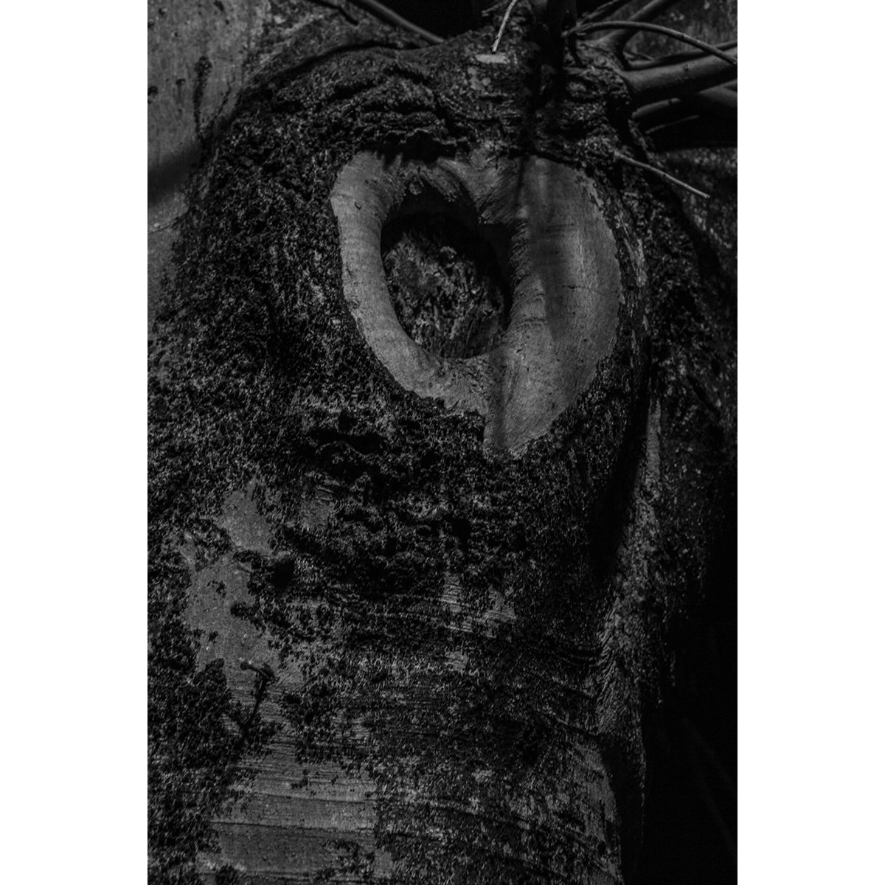
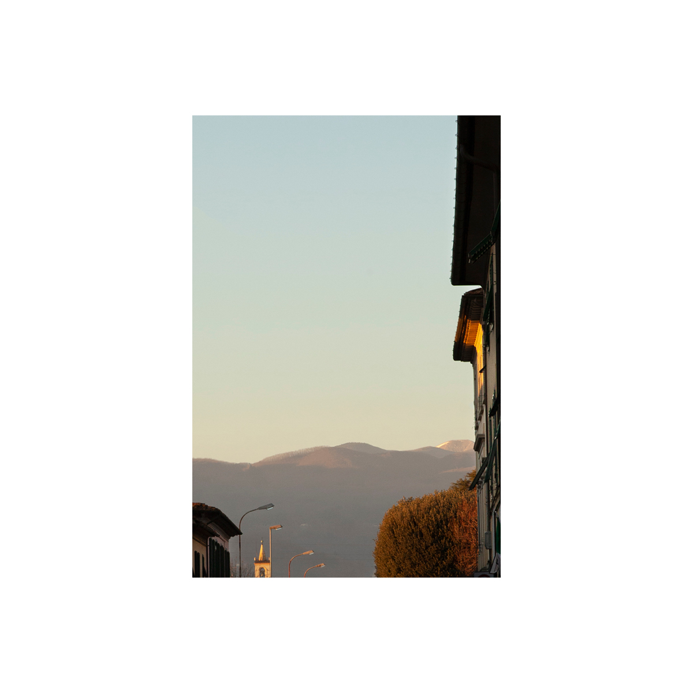
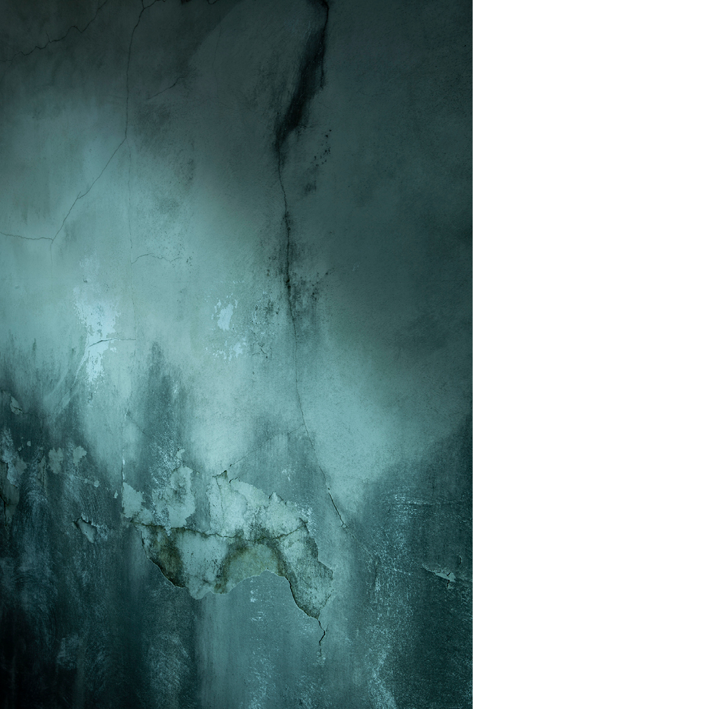
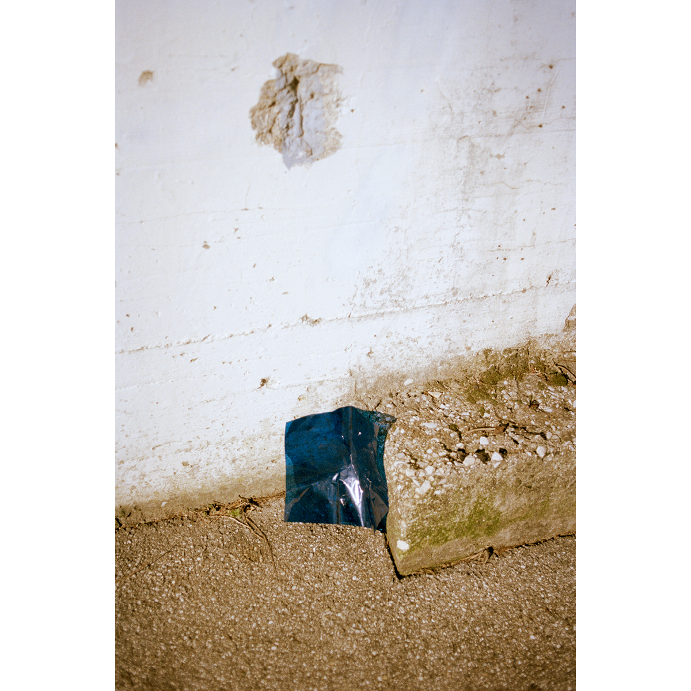
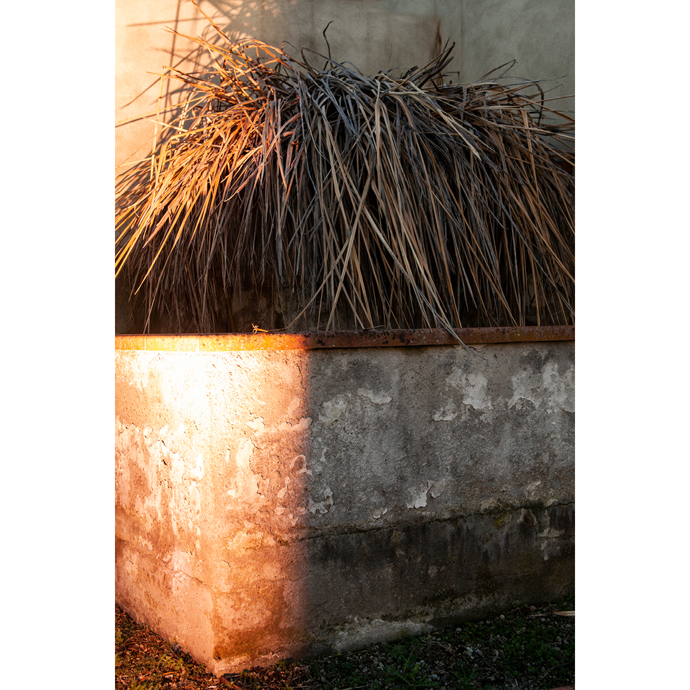
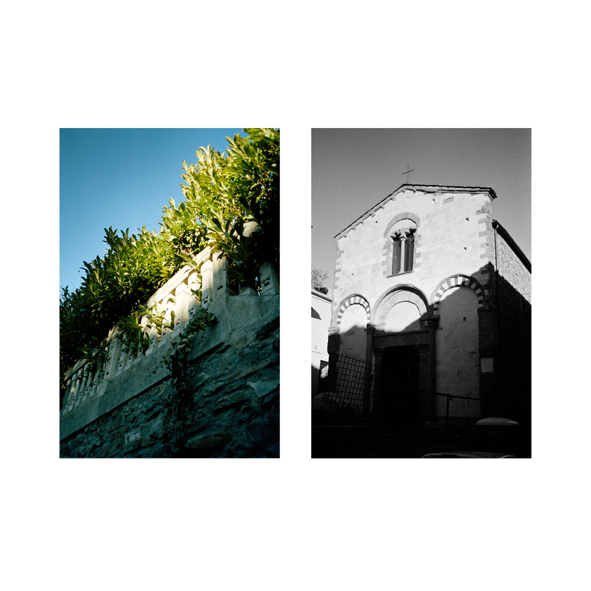
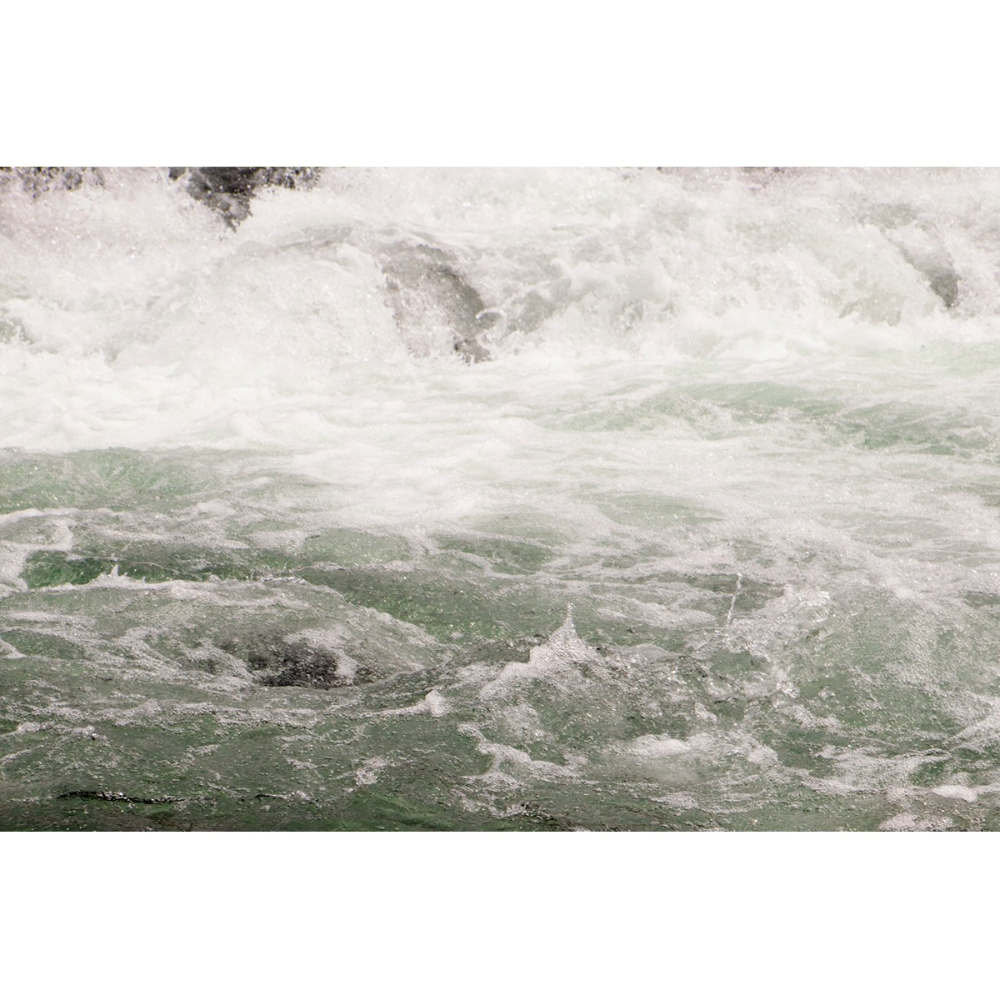

Inizio
I primi giorni di giugno sono stati estremamente caldi in tutta Italia. Bassano del
Grappa, nonostante la sua posizione alle radici delle Prealpi è stata investiva da
tantissimo sole e temperature elevate; nella ricerca di ripari freschi e maggior spazio
vitale per il movimento, lo sguardo e l'ascolto, abbiamo evitato le zone del centro urbano,
strette e accalcate dalla prima ondata di turismo estivo, dirigendoci sempre verso il fiume
e la complessità dei suoi percorsi, a ridosso del centro storico. Camminando le rive del
Brenta, tutti i giorni, più volte al giorno, e in orari diversi, abbiamo attraversato il
suono e la luce del fiume: i riverberi cangianti di un’acqua fredda e potente; una presenza
massiva che definisce inevitabilmente l’umore di questa città e le sue direzioni: per tutti
essa è una compagna e il riferimento orientativo e, allo stesso tempo, il continuo accesso
al perdersi, a una partenza possibile, non precipitosa ma pronta, sostenuta dai proprio
passi.






